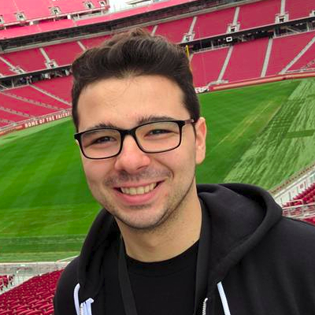
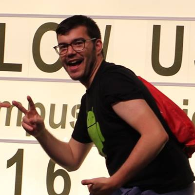
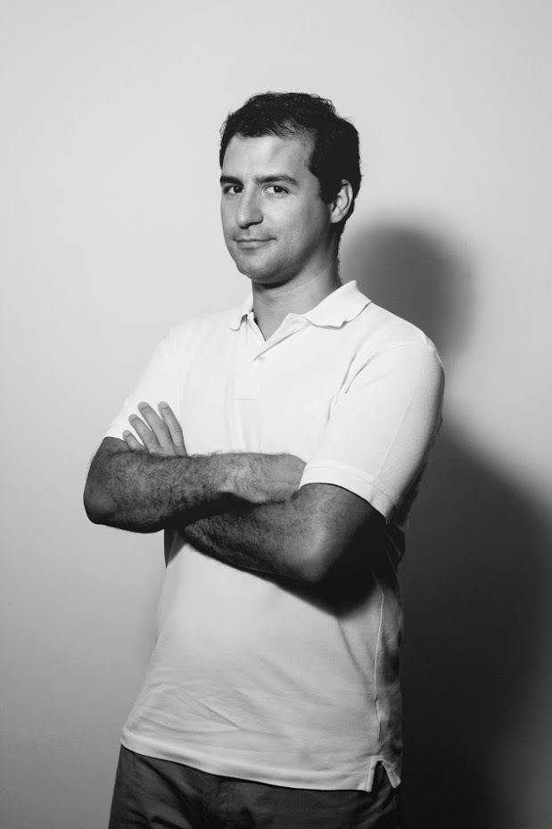
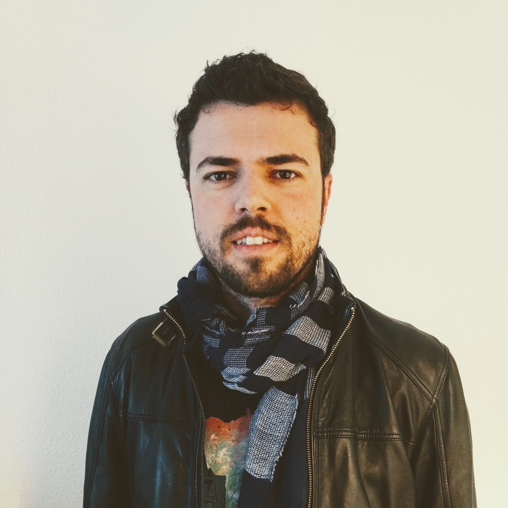
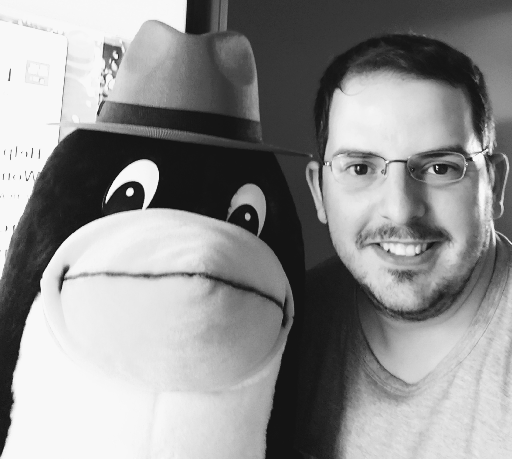
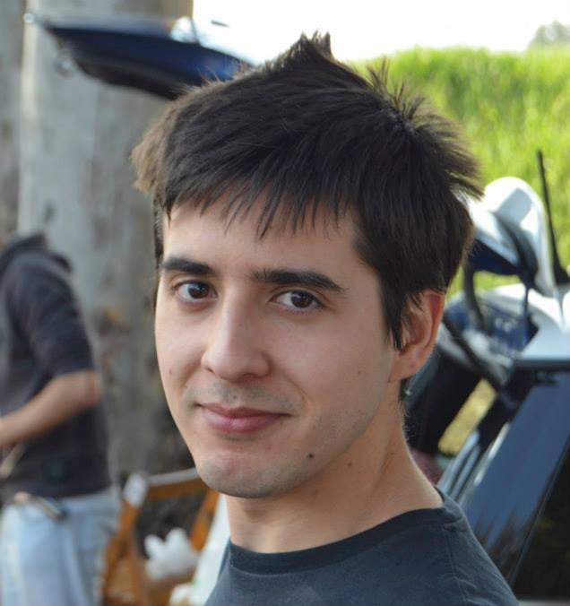
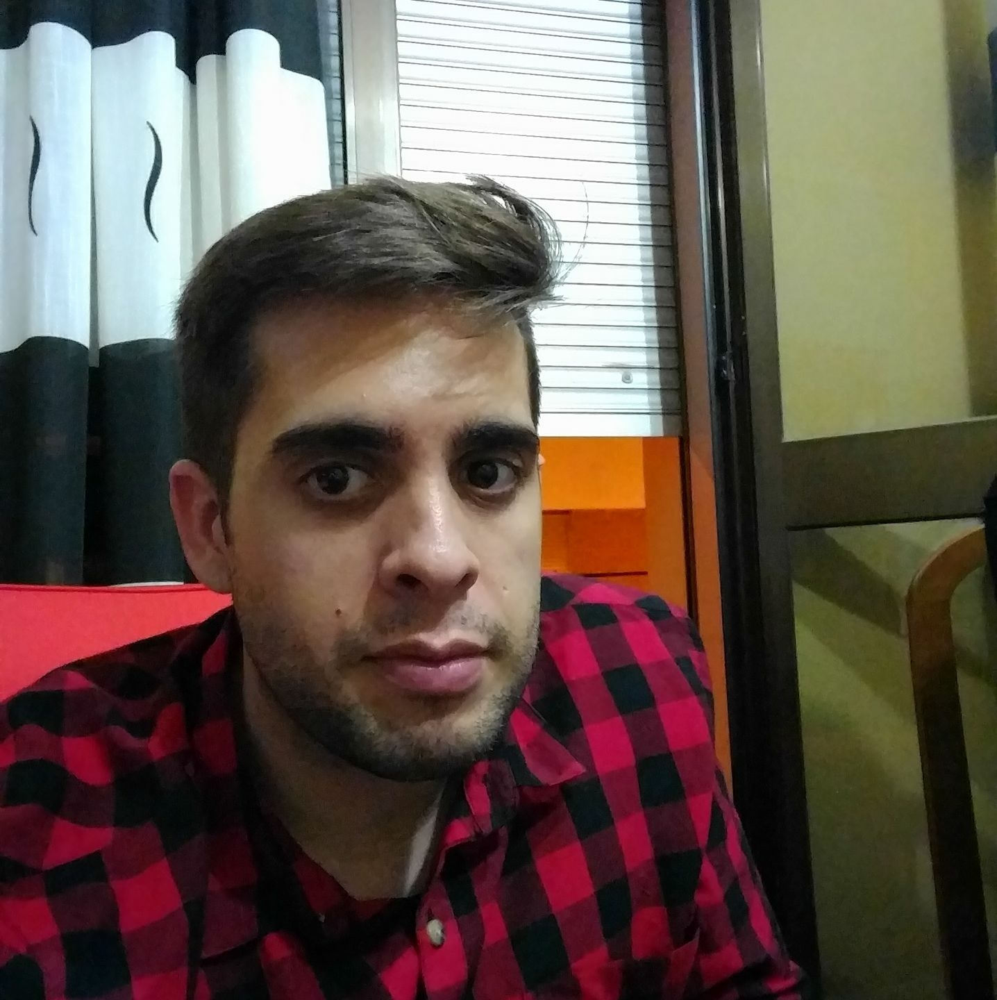
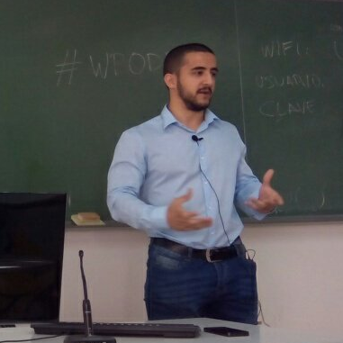

En una sesión de 45 minutos repasaremos los conceptos básicos de blockchain, las soluciones disponibles y las oportunidades de innovación disruptiva que genera.
GDG CÓRDOBA DEVFEST 2017
Sábado 2 de diciembre
¿Estás listo para unirte al DevFest?
¡Consigue tu entrada GRATIS!
NUESTROS PONENTES
Aquí puedes ver los estupendos ponentes que tendremos con nosotros

Apasionado de las comunidades, del software libre y todo lo relacionado con la tecnología. Trabajando en RTI desde hace un año como ingeniero de software. Me gusta tocar y romper. Organizador de Google Developer Group Granada.
Israel Blancas
Real-Time Innovations

Programador de Software en el Departamento IaaS en BEEVA. Desarrollador FullStack y early adopter de nuevas tecnologías.
Esteban Dorado
BEEVAPorteño Android Lover. Actualmente rompiendo código en Idealista. Trabajó en empresas como Sun Microsystems, Telefónica, Heineken, Qualcomm y algunas startups, en todas ellas descubrió que una gran forma de mejorar es a través de un buen Code Review.
Nicolás Patarino
IdealistaEstudiante de Ing. Software apasionado por el desarrollo web. Actualmente su interes está entre Vue.js y Symfony, aunque de vez en cuando hay hueco para proyectos con otras librerías ( Electron.js, image-processing y GraphQL). Muy apasionado por todo lo que rodea a las comunidades software. Durante varios años es miembro del Aula de Software Libre de la Universidad de Córdoba. Con cerveza en mano puede ser encontrado en meetups de distinta índole y distintos países.
Omar Sotillo
Aula Software Libre UCOProfesional del mundo de la información y la tecnología con 10 años de experiencia internacional. Su contacto con Cosfera a través del mundo del coworking la trajo a Córdoba por primera vez en 2014 para organizar un Rails Girls como parte de su trabajo apoyando la incorporación de las mujeres al mundo de la tecnología. Ya empadronada, Cristina vuelve a hablar de diversidad y tecnología con más optimismo que nunca.
Cristina Santamarina
The Neon Project

Lleva desarrollando Android desde el 2010 y actualmente lleva la app de Chicisimo, una de las mejores apps del año en España en 2015 y en Francia en 2016. Anteriormente ha trabajado como Android Lead en Fever y como desarrollador Android en Tuenti. Además es un miembro activo de la comunidad, ex-coordinador de Android Startup, el primer grupo de desarrolladores Android de la Comunidad de Madrid.
Saúl Díaz
Chicisimo

Apasionado de los GIFs y del código clean, bonico y bien testeado. Inconformista empedernido y fan de aprender cosas bien pensadas. Actualmente diseñando software para bots. A veces me gusta disfrazarme de panda y torturar mi guitarra.
Javier Aguirre
Reply.ai
Ha peleado con muchas tecnologías desde C++ a Javascript y a a ratos lidia con servidores. En su tiempo libre además organiza meetups para el GDG Madrid y para grupos en los que promueve la mayor participación de las mujeres en tecnología (AgileGirls y Tech&Ladies).
Laura Morillo-Velarde
seedtag

Software Engineer in RedHat working in ManageIQ Project and Middleware with RoR, Go and angular. With more than 3 years of professional experience like SysAdmin (Hadoop certified, CloudForms) and Developer (Microservices in Go, OpenStack certified), working in opensource projects and organizer of GDGCloud Madrid.
Alberto Gutiérrez
RedHatI am focused on channeling innovation in areas where technology has the potential for significant change. In the last three years I am part of the team coSfera, only the first coworking space in Cordoba, a place where things happen, a platform for independent professionals and community where local entrepreneurs to connect, inspire and transform. The terms of space, community, connect, inspire and transform are useful for specific actions that lead to innovation.
Miguel Calero
coSferaData Scientist y cofundadora de Datatons (www.datatons.com), Ex-Sysadmin y enamorada de los datos, desarrolla proyectos de analítica sobre plataforma Hadoop no solo enfocado en el tratamiento dato sino también en la parte del diseño dada su experiencia en la administración de sistemas Big Data. Forma parte del programa de openNasa Datanauts y actualmente participa también como coorganizadora del grupo de R-ladies Madrid y el meetup de Big Data Madrid intentando generar una comunidad.
Ines Huertas
coSferaAGENDA
Estas son las ponencias que tenemos confirmadas para el DevFest
"Una pequeña charla introductoria sobre GraphQL (Query language for your API) en el que se enseñaran los conceptos básicos de esta tecnología haciendo uso de herramientas como Apollo (Cliente de GraphQL / vue-apollo) y Vuex (Centralized State Management for Vue.js / vue-supply).
¿Qué papel juega Google en la lucha por la mejora de las cuotas de diversidad en tecnología? Un repaso optimista a las iniciativas de inclusión que Google ha realizado en los últimos años (Made with Code, Women Tech Makers, HWGO, patrocinios a pequeños programas externos...) y su impacto positivo.
Pasaremos del humo a la solidificación del concepto, veremos los pasos necesarios para comenzar a trabajar en un modelo de Machine Learning y qué hay que tener en cuenta a la hora de conseguir una predicción precisa en nuestro campo de datos. Todo esto aliñado con los mejores GIFs para completar el show.
Breaking Bug es un development thriller sobre cómo un bug que es capaz de traspasar las barreras de seguridad, es capaz de poner en jaque a toda una app, y cómo un desarrollador tiene que llegar más allá de lo que ha llegado nunca para entender qué está pasando y solucionarlo a tiempo.
En esta charla se hablará de la importancia de un buen code review, de cómo aplicarlos en los PR y de algunas estrategias que usamos en Idealista (equipo de Android nativo)
Charla inspiracional de la importancia del Open Source desde la carrera, cómo las empresas valoran esta actividad y como conseguí entrar en una empresa desarrollando OpenSource.
Esta presentación es un compendio de cosas: buenos consejos a la hora de poner una aplicación en producción, por qué algunas empresas deciden tomar algunas decisiones y más.
En esta charla-taller veremos las diferentes herramientas que Kubernetes nos provee para ayudarnos a crear una infraestructura escalable. Para la realización del taller, los asistentes necesitarán registrarse en Google Cloud.
En este taller de explicaremos ¿qué es REST? , ¿para qué utilizarlo? y ¿cuándo es una buena idea usarlo?. Realizaremos un servicio RESTFul con Go desde cero, además nos centraremos en el manejo de las peticiones a nuestro servidor y sus diferentes métodos. Además, construiras tus tests unitarios y tus tests de integración.
En esta charla quiero contaros las principales vías de investigación en las que se está trabajando en el mundo universitario y los avances de las empresas punteras en robótica. Hablaré, entre otras cosas de un concepto muy interesante: la colaboración entre humanos y robots, conocida como Symbiotic Autonomy, de proyectos de investigación vigentes en la EU y USA sobre robótica, sobre las competiciones anuales y sus objetivos a corto plazo y de los avances de empresas como Boston Dynamics, Aldebaran/Softbank Robotics o Reem-PAL robotics..
Mostraremos como las técnicas de machine learning aplicadas al procesamiento de imágenes pueden ser usadas para detectar densidades de gente en un área especifica para posteriormente evaluar frente a la frecuencia de los transportes públicos de la zona como podría llevarse a cabo una auto regulación automática de los mismos.
LOCALIZACIÓN
Facultad de Ciencias del Trabajo
Calle Adarve, 30, 14001 Córdoba
ORGANIZADORES DEL GDG DEVFEST 2017
Y por supuesto muchas gracias a todos nuestros organizadores
Fran Aranda
Organizador del eventoAna de Haro Tienda
Organizadora del evento

Daniel Luque Quintana
Organizador del eventoMiguel Calero
Organizador del eventoPablo León Alcaide
Organizador del eventoNieves Borrero Barea
Organizadora del evento

David Luque Quintana
Organizador del evento

Juan A. Romero
Organizador del eventoVioleta Cejas
Organizador del eventoCOLABORADORES & SPONSORS
Éstas son las empresas y organizaciones que se preocupan por la tecnología